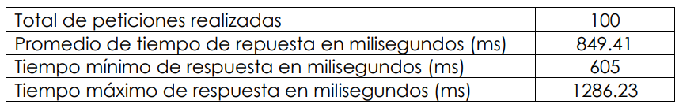
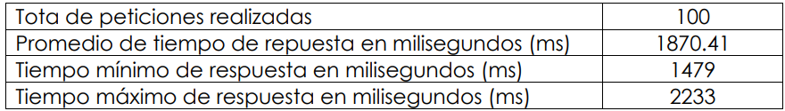
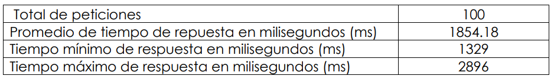
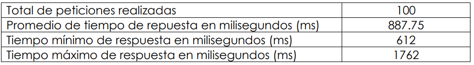
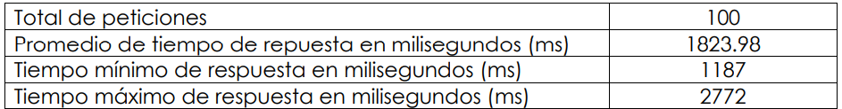
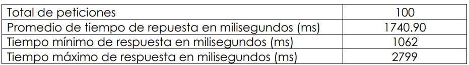

Artículo 7 Instalación y configuración del sistema Koha para la Facultad de Medicina Veterinaria y Zootecnia
7.1 Resumen
El proyecto realizado en la Facultad de Veterinaria se basó en la instalación y configuración del sistema administrativo de bibliotecas KOHA, el cual ofrece una plataforma para la administración de la biblioteca, destinada para los empleados de la biblioteca, así como un sitio para los usuarios públicos como estudiantes y público en general.
La biblioteca de veterinaria ya contaba con una instancia de Koha, pero a lo largo del tiempo y la no correcta configuración del sistema provoco que el sistema se volviera lento e inestable, dando una experiencia no satisfactoria al usuario, por lo que a la nueva instancia se migro toda la información tanto de los elementos bibliográficos como de los usuarios.
Un punto para mencionar es la personalización del sitio público con la imagen institucional el cual involucro modificación de plantillas, hojas de estilo y código de JavaScript, además de entregar documentación sobre el uso de los módulos del sistema.
7.2 Introducción
La biblioteca de la Facultad de Medicina Veterinaria y Zootecnia de la Universidad de San Carlos de Guatemala contaba con una instancia del sistema administrativo KOHA la cual ayuda a la gestión y control de procesos y recursos pertenecientes a dicha institución.
Los objetivos del proyecto fueron: migrar la instancia anterior de KOHA a una versión reciente, por lo cual se necesitaba instalar y trasladar información del sistema anterior a una nueva versión, personalización de las páginas a la imagen institucional, realización de documentación que ayudara a la capacitación de nuevo personal, y agregar una nueva característica donde se presente la información de las últimas adquisiciones de elementos bibliográficos.
7.3 Artículo
El análisis del proyecto se realizó con base en los inconvenientes que posee la instancia actual del sistema Koha de la biblioteca de la Facultad de Veterinaria, además de agregar nuevas funcionalidades al sistema y configuraciones para un alto rendimiento del sitio.
7.3.1 Metodología de desarrollo
La metodología utilizada para el desarrollo del proyecto fue Scrum, por la adaptabilidad en la forma de realizar entregables y definir los requerimientos.
7.3.2 Desarrollo de actividades
Configuración del sistema Koha:
Se realizó la configuración óptima del sistema Koha adecuada a las necesidades presentadas de la biblioteca:
- Problemas de conexión y rendimiento
- Problemas de información
Para los problemas de conexión y rendimiento se realizaron modificaciones a los archivos de configuración del sistema Koha, además de realizar la optimización del servidor de aplicaciones Apache 2.0, por medio de habilitación del módulo de Cache.
Respecto de los problemas de información se optimizaron las configuraciones de la base de datos MySQL, mejorando el rendimiento en el pool de conexiones permitidas y el buffer de almacenamiento
Personalización de vistas:
Acorde a las necesidades para la presentación e identificación del sitio a la imagen institucional, se crearon hojas de estilo, se modificaron plantillas propias de Koha y se implementaron características por medio de JavaScript, teniendo como resultado una mejor experiencia al usuario final.
Proceso de migración de la información del sistema anterior al nuevo sistema:
Para la migración de la información del sistema de la instancia anterior de Koha a la nueva instancia, se utilizaron los módulos provistos por Koha; todo eso se desarrolló a través de líneas de comando, esto, para no sobrecargar el sistema.
Implementación de un content management system (CMS):
La implementación del CMS o sistema de gestión de contenido en español, se realizó a través de la creación de nuevos templates y controladores al sistema Koha y estos a su vez presentarán la información que será administrada a través del sitio administrativo de KOHA en la sección de preferencias del sistema.
Figura 7.1: Página creada a través del CMS. Fuente: elaboración propia
Instalación y configuración del plugin de nuevos arribos:
Unas de las nuevas características que se instaló al sistema Koha fue el módulo de nuevos arribos, el cual es administrable por los usuarios internos de la aplicación.
Con esta nueva funcionalidad los usuarios públicos tendrán la opción de ver las últimas adquisiciones realizadas por la biblioteca.
Figura 7.2: Página de nuevas adquisiciones. Fuente: elaboración propia
Manuales:
Se realizaron manuales para cada una de las etapas del desarrollo del proyecto, ya que existe interés por parte de otras unidades académicas en la implementación de este sistema en sus bibliotecas internas.
Además, se entregaron manuales de usuario y videos sobre el uso de los módulos de KOHA que podrán servir como medio de capacitación a nuevo personal.
7.4 Conclusiones
Se instaló y configuró una instancia del sistema Koha en los servidores de la Facultad de Veterinaria para la administración de la biblioteca; estos a su vez agregaron un canal de acceso al servicio de catalogación y una opción para la consulta de los elementos bibliográficos que la biblioteca posee.
La personalización de vistas del sitio público se realizó a través de creación y cambios en las hojas de estilos, además de implementar un código en JavaScript para mejorar el comportamiento y presentación del sitio. Todos estos recursos utilizados se almacenaron en una ruta dedicada a recursos estáticos, para así llevar un mejor control de cambios.
El proceso de migración de la información de la instancia antigua se realizó por medio de los módulos que Koha ofrece, realizando así un cambio transparente de la versión antigua a la más reciente que posee el sistema en mención.
7.4.1 Discusión de resultados
Los siguientes resultados fueron obtenidos realizando pruebas de stress al sitio público de la biblioteca, los cuales muestran las mejoras que se obtuvieron por medio de la optimización del servidor y base de datos.
Descripción del escenario 1: para el escenario uno se efectuó una prueba ya solicitada a página principal, con una configuración de 100 usuarios, realizando una petición al servidor cada segundo. Enlace: https://bit.ly/3yZO0TK
 Tabla 7.1: Resultados para el escenario 1.

Figura 7.3: Tiempo de respuesta (ms) vs número de petición, escenario 1. Fuente: elaboración propia
Descripción del escenario 2: para el escenario dos se realizó una prueba efectuando una petición de búsqueda general, con una configuración de 100 usuarios, ejecutando una petición al servidor cada segundo. Enlace: https://bit.ly/390mH0O
 Tabla 7.2: Resultados para el escenario 2
Figura 7.4: Tiempo de respuesta (ms) vs número de petición, escenario 2. Fuente: elaboración propia
Descripción del escenario 3: Para el escenario tres se realizó una prueba realizando una búsqueda avanzada, con una configuración de 100 usuarios, realizando una petición al servidor cada segundo. Enlace: https://bit.ly/3tILro8
 Tabla 7.3: Resultados para el escenario 3
Figura 7.5: Tiempo de respuesta (ms) vs número de petición, escenario 3. Fuente: elaboración propia
Descripción del escenario 4: se realizó una prueba en conjunto, llevando a cabo un set de peticiones a la página principal, búsquedas generales y avanzadas, con una configuración de 100 usuarios para cada prueba, con un total de 300 peticiones, realizando 3 cada 3 segundos. En relación con los enlaces, se probaron todos los anteriores de forma conjunta.
 Tabla 7.4: Resultados para el escenario 4
Figura 7.6: Tiempo de respuesta (ms) vs número de petición, escenario 4. Fuente: elaboración propia
Se probaron todos los enlaces de forma conjunta. Los resultados se presentan en las tablas 7.5 y 7.6.
 Tabla 7.5: Resultados para el escenario 5
 Tabla 7.6: Resultados para el escenario 6
7.5 Referencias
[1] Gómez Vega, E. y Martín, A.), «Gómez Vega, E. y Martín, A», Sistemas Integrales de gestión para bibliotecas, 2015. [En línea]. Disponible en: https://bit.ly/2NPUSRZ. [Último acceso: 01 septiembre 2020].
[2] Koha, Documentación Oficial de Koha, 2021. [En línea]. Disponible en: https://bit.ly/393IWDo. [Último acceso: 12 agosto 2020].
[3] Koha-Plugin ). Documentación oficial de Plugin de nuevos arribos, 2020. [En línea]. Disponible en: https://bit.ly/3k3ASbO. [Último acceso: 24 noviembre 2020].